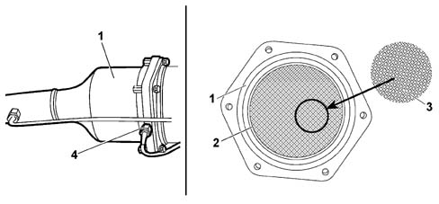
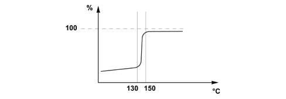
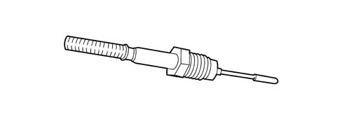

CATAYLZER
- Path
- Descriptions > 10 ENGINE > 1080 EMISSION CONTROL SYSTEM > 1080B EXHAUST EMISSION CONTROL SYSTEM > CATAYLZER
- Kind
- system description
- Applies to
- engines: 2.0 16V JTD, 2.2 16V JTD; all production periods
- Interactive page
- https://sloeber94.github.io/elrnDB-fUlss/en/#/179000075
Applies to: engines: 2.0 16V JTD, 2.2 16V JTD; all production periods
The catalytic converter is a post-treatment device for reducing the carbon monoxide (CO) and unburnt hydrocarbons (HC), transforming them into carbon dioxide (CO2) and water vapour (H20).
SPECIFICATIONS
The catalytic converter comprises a stainless steel casing (1), thermal insulation (2) and a ceramic structure with a honeycomb structure (3) and cells impregnated with platinum which is a catalyzing substance for the oxidation reactions.

1, stainless steel outer casing
2, thermal insulation
3, honeycomb ceramic structure
4, temperature sensor
OPERATION
The chemical transformation inside the catalytic converter increases during the post-injection stage with the combustion of unburnt hydrocarbons (HC), this post-combustion which increases the temperature of the exhaust gases (catalytic combustion) is controlled by the temperature sensors upstream and downstream of the catalytic converter.
An initial series of post-injections gradually increases the catalyzation process until the maximum conversion level is reached (around 98% starting at 130°/150°C). Beyond this level, a further increase in the temperature of the exhaust gases causes the virtual total destruction of the hydrocarbons.

% = conversion percentage
TEMPERATURE SENSOR UPSTREAM OF THE CATALYZER
The temperature sensor allows the engine management node to determine the temperature of the exhaust gases straight after they come out of the turbocharger upstream of the catalytic converter.
The sensor is the NTC type (negative temperature coefficient): as the temperature increases, the resistance value decreases.

The table below contains the resistance values dependent on the temperature
Temperature °C | Resistance k Ohm |
|---|---|
100 | 96.0 |
150 | 32.0 |
200 | 13.5 |
250 | 6.30 |
300 | 3.30 |
350 | 1.85 |
400 | 1.15 |
450 | 0.755 |
500 | 0,514 |
550 | 0.362 |
600 | 0.268 |
650 | 0.198 |
700 | 0.151 |
TEMPERATURE SENSOR DOWNSTREAM OF THE CATALYZER
This sensor allows the engine management node to monitor the temperature of the exhaust gases downstream of the catalytic converter and, as a result, the increase in temperature caused by the catalytic combustion. This sensor is located between the catalytic converter and the anti-particle filter and is the same type as the sensor located upstream of the catalytic converter.